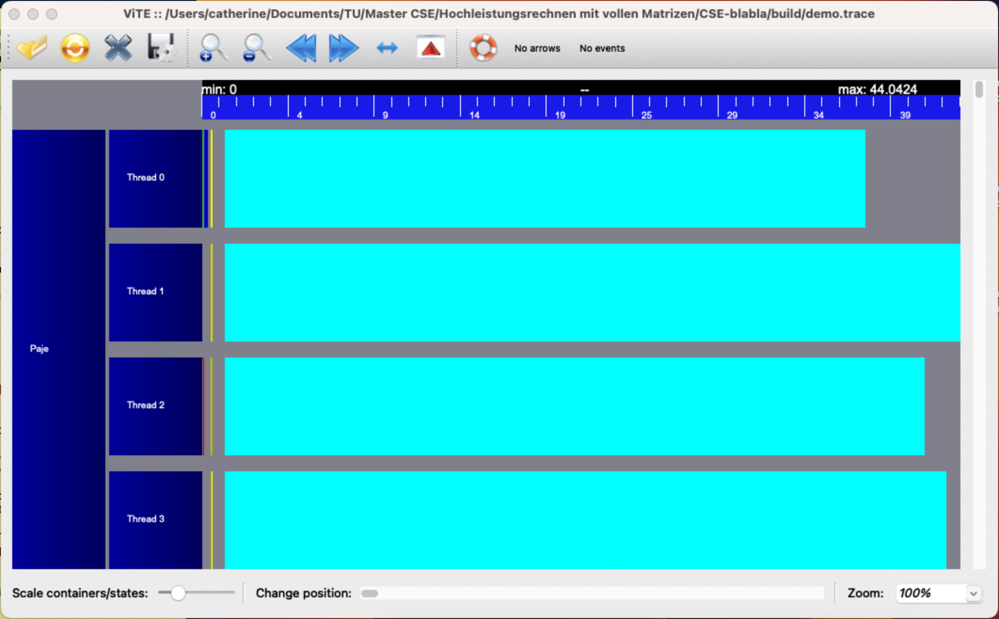
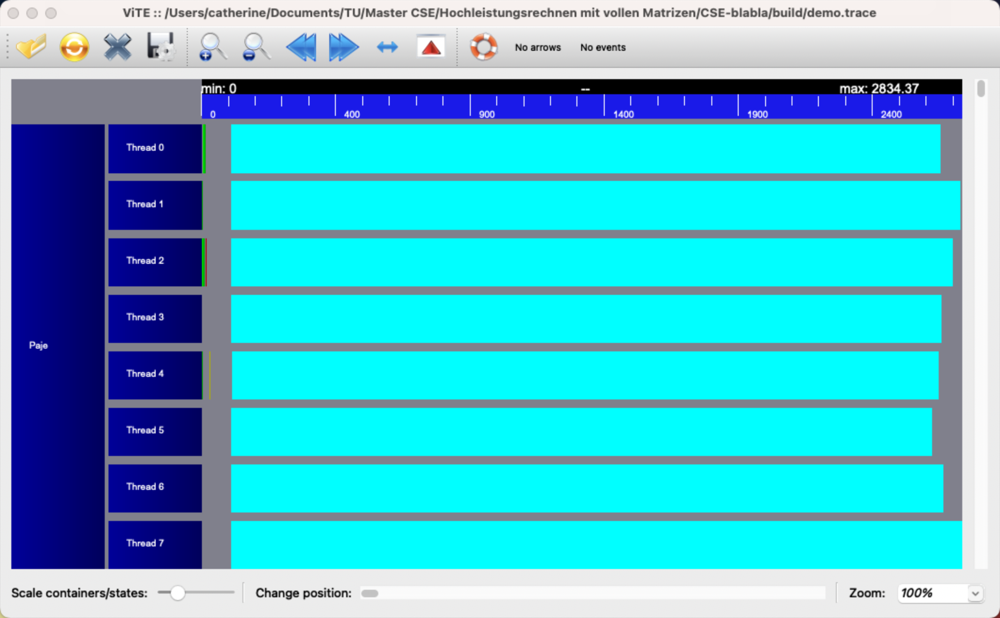

Performance#
Overview#
This section details the key HPC concepts implemented, including vectorization (SIMD), cache optimization, and pipelining, to ensure efficient linear algebra operations.
Vectorization (SIMD)#
To unleash the full power of modern CPUs, which support Single Instruction, Multiple Data (SIMD) operations, we implemented a custom wrapper for vector data types and intrinsic functions.
Our solution is the SIMD<T, S> template class. It’s the engine that handles this parallel magic to get Fast-CSErious!
We built the SIMD class to be flexible and fast, using a split-and-conquer strategy.
If you ask for a vector size S, our class automatically breaks it down into smaller pieces until it reaches the native size your CPU supports (for example a 4-wide AVX register). By using masking, we avoid slow single-number loops for the few remaining elements at the end of an array. This means our class can handle any vector length you throw at it.
This is achieved by splitting the vector into a low part (m_lo) and a high part (m_hi) recursively until the size is 1 or a native SIMD size.
You don’t have to worry about Intel AVX or ARM NEON. We define the basic arithmetic operators (+, *, -) once in simd.hpp.
Our system automatically passes the job down to the low-level intrinsic functions available for your machine via files like simd_avx.hpp or simd_arm64.hpp.
The specific, highly-optimized intrinsic functions are only contained in the included files:
#ifdef __AVX__
#include "simd_avx.hpp" // Contains SIMD<double, 4> implementation for Intel/AMD
#endif
#if defined(__aarch64__) || defined(_M_ARM64)
#include "simd_arm64.hpp" // Contains SIMD implementation for ARM processors
#endif
Now, a simple C++ vector addition is automatically translated into a single parallel instruction on your CPU.
SIMD<double,4> va(a);
SIMD<double,4> vb(b);
// this simple addition translates directly into a fast, parallel CPU instruction
SIMD<double,4> vc = va + vb;
Vectorizing mathematical functions#
Why implement our own sin or cos? Because the standard library’s versions are designed for accuracy across a massive range, which makes them slow. For high-performance simulations, we need speed.
We replaced slow standard calls with custom SIMD-friendly functions implemented in simd.hpp that compute exp, sin, and cos in an efficient, parallel manner.
We implemented sin and cos using Argument Reduction to shrink the input angle to a small, central interval, and then used Chebyshev Polynomials for fast approximation.
The vectorized exponential was made fast using Argument Reduction based on ln(2) and a quick calculation of 2^q by directly manipulating the exponent bits of the double-precision number.
To use these vectorized functions, simply pass a SIMD vector to them:
// Create a SIMD vector with four exponents: -1, 0, 1, and 2
SIMD<double,4> exponents(-1.0, 0.0, 1.0, 2.0);
// Compute e^x for all four values simultaneously
auto result = exponential(exponents);
Pipelining#
In high-performance computing, a CPU can stall if it must wait for a calculation to finish before starting the next. To prevent this, CSE-blabla utilizes tile-based accumulation to hide instruction latency and maximize throughput.
Our implementation in matexpr.hpp, specifically MultMatExpr::GetTile, optimizes the Arithmetic Intensity of matrix operations.
Instead of a single dependency chain, we process a tile of height H to maintain multiple independent accumulators. While the CPU waits for the result of one row, it simultaneously executes the next, ensuring the arithmetic units are never idle.
To push performance toward the hardware’s theoretical limit, we use three key strategies. We load a single scalar A_ik and broadcast it across all lanes of a SIMD vector. This scalar is multiplied against an entire SIMD block of Matrix B, performing multiple operations per load. Organizing data into tiles reduces the ratio of slow memory transfers to fast floating-point operations.
Benchmarks in Fast-CSErious/demos/simd_timings.cpp confirm that this pipelined approach outperforms standard loops by saturating the CPU’s pipeline. As a user, these optimizations are triggered automatically via expression templates.
Simply writing a standard matrix product utilizes the optimized kernels:
#include <matrix.hpp>
using namespace ASC_bla;
// The Expression Template system automatically breaks this
// operation into pipelined SIMD tiles:
Matrix<double> C = A * B;
Caches#
Large matrices cannot fit entirely into the CPU’s fastest memory, the cache. Without optimization, the CPU spends more time waiting for data from the RAM than performing calculations. CSE-blabla solves this using a blocked approach to ensure maximum data reuse.
We implement this through a two-level blocking system found in matrix.hpp and matexpr.hpp.
At the first level, the library partitions large matrices into macro-blocks that fit within the Level 2 cache.
At the second level, these blocks are further divided into tiny tiles processed by our micro-kernels, which are small enough to be stored directly in the Level 1 cache and CPU registers.
This ensures that every piece of data loaded from the main memory is used for as many calculations as possible before being replaced.
Users do not need to manage these memory levels manually, as the library is designed to handle cache-blocking automatically through our Expression Template system. By simply using standard matrix operators, the library selects the most efficient evaluation path based on the specific dimensions and storage order of your data.
Parallelization#
For lightweight thread synchronization, we utilize the Compare-and-Swap (CAS) operation.
Unlike standard mutexes that put threads to sleep, this implementation uses std::atomic<T>::compare_exchange_strong to create a spinlock.
This allows a thread to poll a memory location and update it only if the state is exactly as expected. This mechanism is the engine behind our SimpleLockFreeQueue (found in Fast-CSErious/concurrentqueue/benchmarks/simplelockfree.h), allowing workers to claim tasks with near-zero latency.
We also parallelized the matrix-matrix multiplication by using the RunParallel task manager to distribute work across the available CPU cores.
In demo_tasks.cpp, we demonstrated a row-based partitioning strategy where the result matrix is divided into independent blocks. Each thread calculates a specific range of rows, ensuring thread safety by design since no two workers write to the same memory location.
StartWorkers(7); // Main thread + 7 workers
const size_t num_tasks = 8;
RunParallel(num_tasks, [N, &A, &B, &C](int task_id, int size) {
size_t first = (N * task_id) / size;
size_t next = (N * (task_id + 1)) / size;
// Each thread computes its unique slice of the result matrix
for (size_t i = first; i < next; i++)
for (size_t j = 0; j < N; j++)
for (size_t k = 0; k < N; k++)
C(i,j) += A(i,k) * B(k,j);
});
StopWorkers();
Performance can be visualized using the Vite Trace Explorer to ensure all CPU cores are equally utilized during parallel execution.
By running the parallel matrix multiplication for a 500 x 500 system, the Vite tracer visualizes how the workload is distributed across 4 total threads.
{kind=link}
Here, we used a 2000 x 2000 system and 8 threads to run the matrix multiplication.
{kind=link}